CS184/284A Spring 2026 Homework 2: MeshEdit
Link to webpage: cal-cs184-student.github.io/hw-webpages-kaankont/hw2/
Overview
We implemented Bezier curve and surface evaluation using de Casteljau's algorithm, area-weighted vertex normals for smooth Phong shading, and three mesh editing operations on the half-edge data structure: edge flip, edge split, and Loop subdivision for mesh upsampling. Together, these let us go from control-point geometry to smooth, subdivided triangle meshes.
The most interesting part was seeing how the half-edge data structure makes local mesh operations clean and systematic, and how Loop subdivision can turn a coarse cube into a smooth sphere-like shape with just a few iterations.
Section I: Bezier Curves and Surfaces
Part 1: Bezier Curves with 1D de Casteljau Subdivision
De Casteljau's algorithm evaluates a Bezier curve at parameter \( t \) by repeated linear interpolation. Given \( n \) control points, we interpolate each adjacent pair to produce \( n - 1 \) intermediate points: \[ p'_i = (1 - t) \, p_i + t \, p_{i+1} \] Repeating this \( n - 1 \) times reduces the points to a single point on the curve.
Our evaluateStep implementation loops through the input points and computes (1 - t) * points[i] + t * points[i + 1] for each adjacent pair, returning the vector of interpolated points.
Below are the evaluation steps for a 6-point Bezier curve at \( t = 0.5 \). Each step reduces the number of points by one.
|
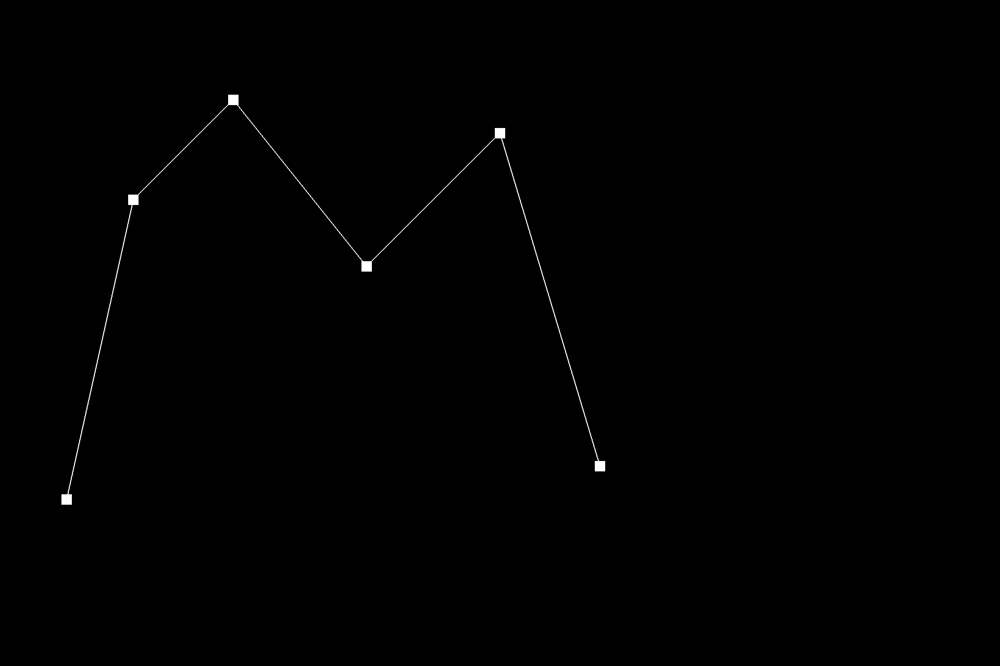 |
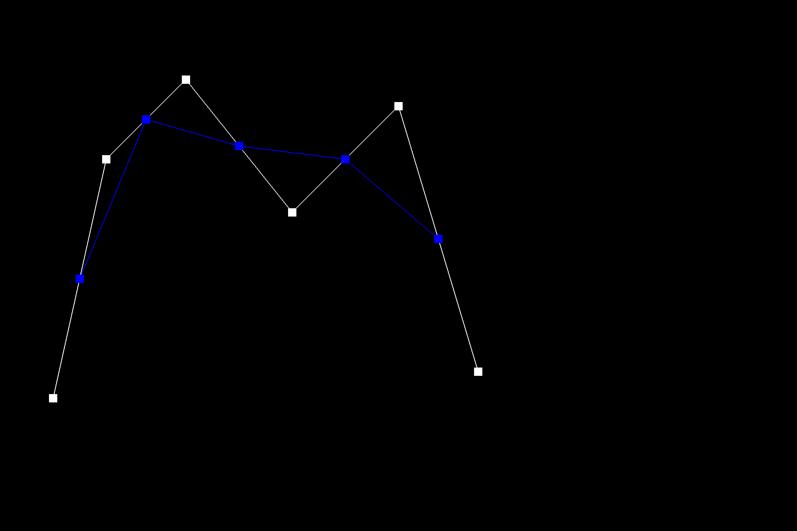 |
|
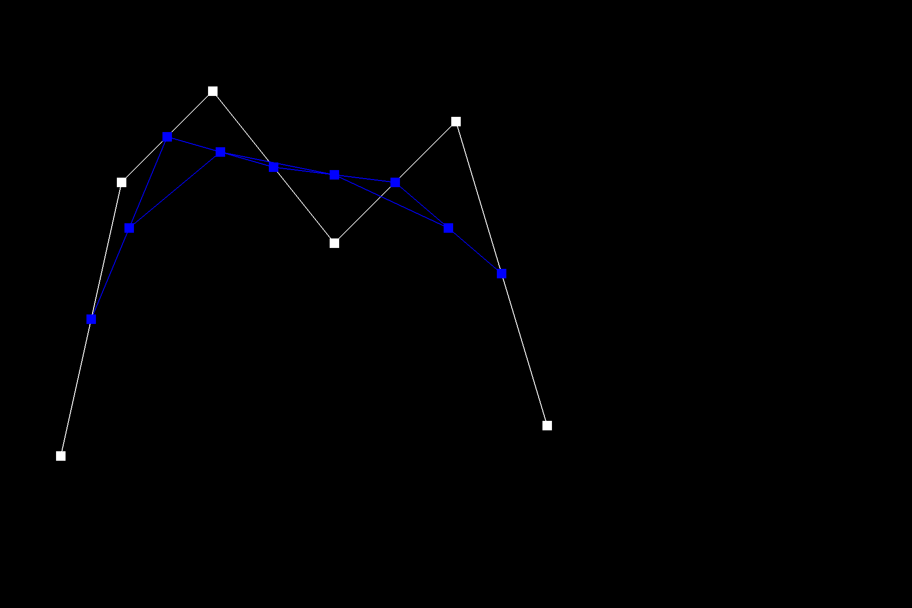 |
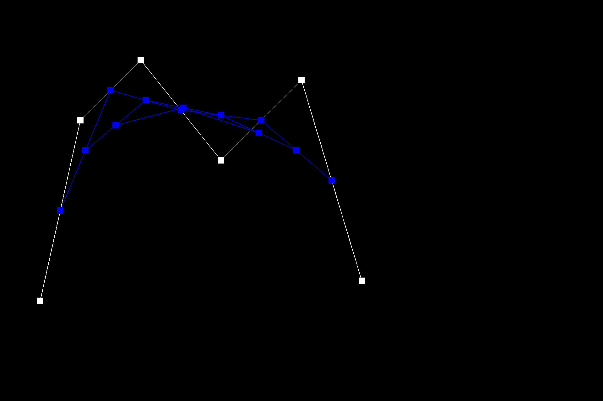 |
|
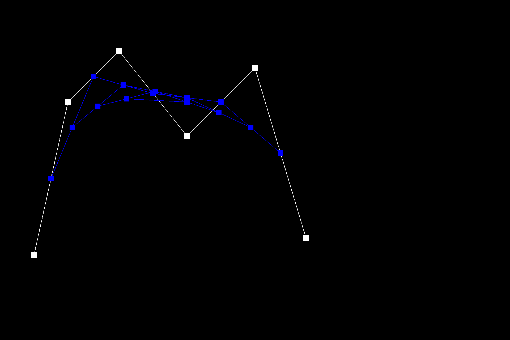 |
|
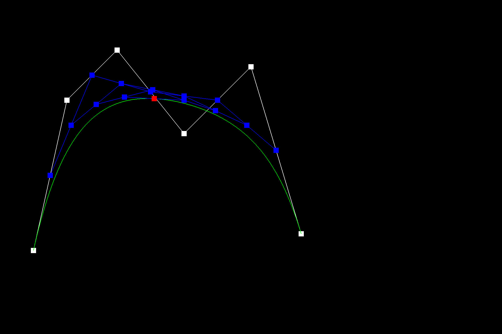
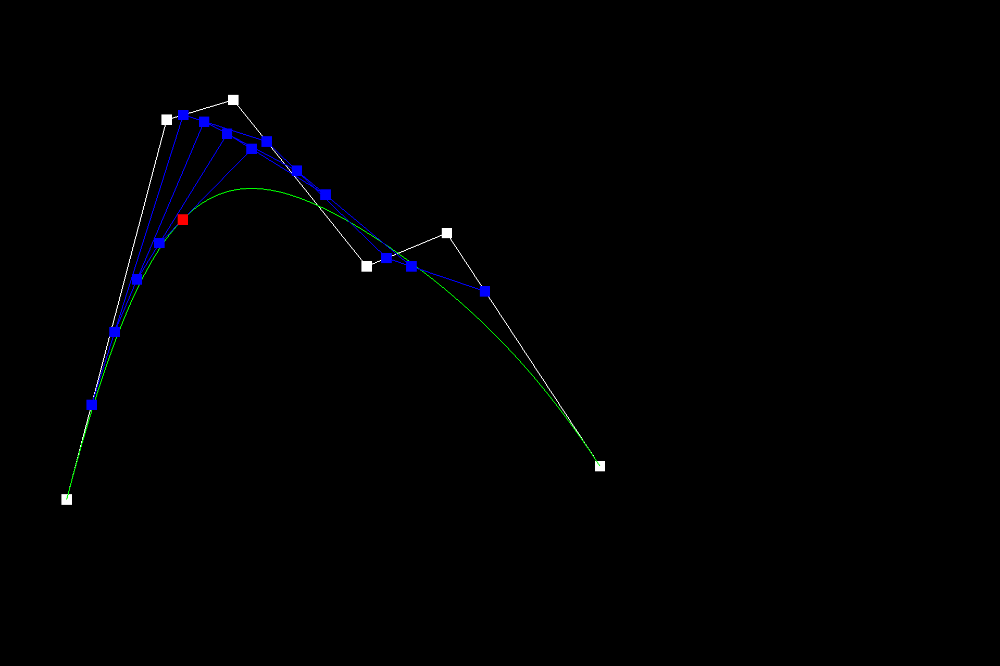
Part 2: Bezier Surfaces with Separable 1D de Casteljau
Bezier surfaces extend the 1D algorithm using a separable approach. Given an \( n \times n \) grid of control points and parameters \( (u, v) \), we first evaluate each row of control points as a 1D Bezier curve at parameter \( u \). This produces \( n \) intermediate points, one per row. We then evaluate this column of points as a second 1D Bezier curve at parameter \( v \) to get the final surface point.
We split this into three functions: evaluateStep performs one level of interpolation on 3D points, evaluate1D repeatedly calls evaluateStep until a single point remains, and evaluate applies evaluate1D across rows at \( u \) then down the resulting column at \( v \).
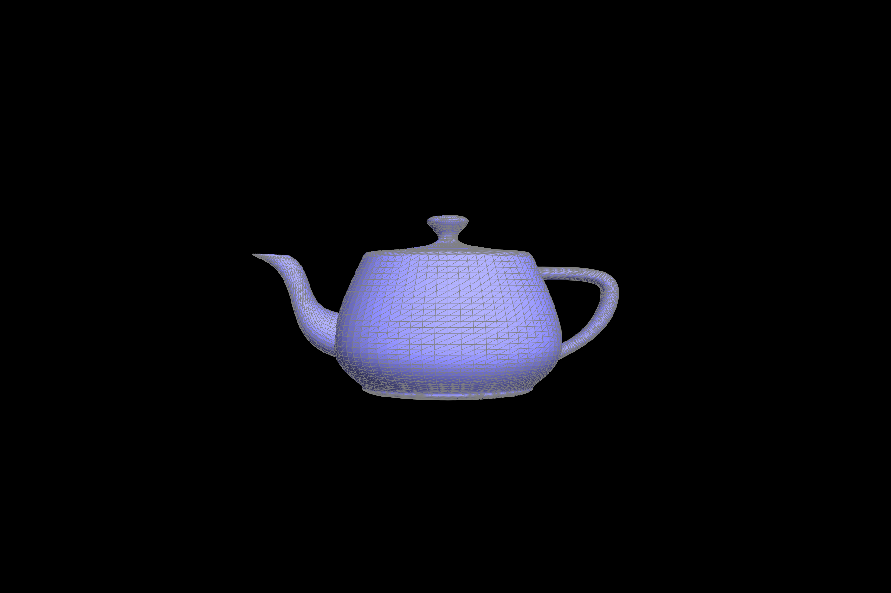
teapot.bez)Section II: Triangle Meshes and Half-Edge Data Structure
Part 3: Area-Weighted Vertex Normals
To compute smooth Phong shading normals, we calculate an area-weighted average of the normals of all faces incident to a vertex. We traverse the faces around the vertex using the half-edge loop h = h->twin()->next(), skipping boundary faces. For each face, we compute the cross product of two edge vectors originating from the vertex:
\[ \mathbf{n}_{\text{face}} = (\mathbf{p}_1 - \mathbf{p}_0) \times (\mathbf{p}_2 - \mathbf{p}_0) \]
The cross product magnitude is proportional to twice the triangle area, so summing these vectors naturally weights larger faces more. After accumulating, we normalize the result.

|
|
Part 4: Edge Flip
An edge flip rotates a shared edge between two triangles. Given edge \( (a, b) \) shared by triangles \( (a, b, c) \) and \( (b, a, d) \), the flip reconnects the edge to \( (c, d) \) instead. No mesh elements are created or destroyed. The operation is purely pointer reassignment on the existing half-edges, vertices, edges, and faces.
We drew the before-and-after configurations on paper, labeled every half-edge, vertex, edge, and face, then systematically called setNeighbors on each half-edge to match the target configuration. We also updated vertex, edge, and face half-edge pointers. Drawing everything out made it possible to get right on the first try.
|
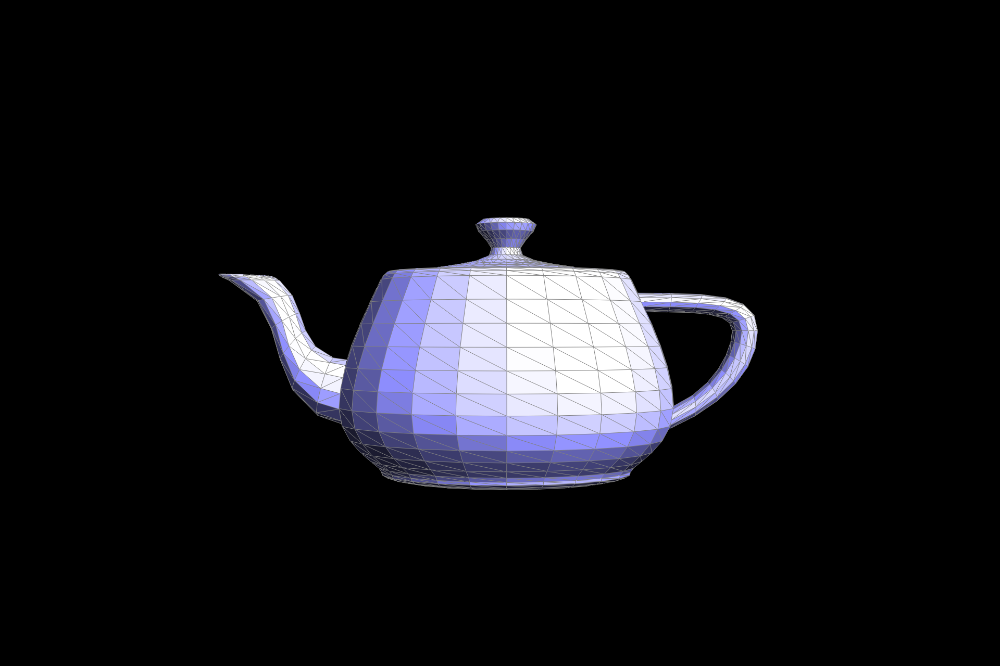 |
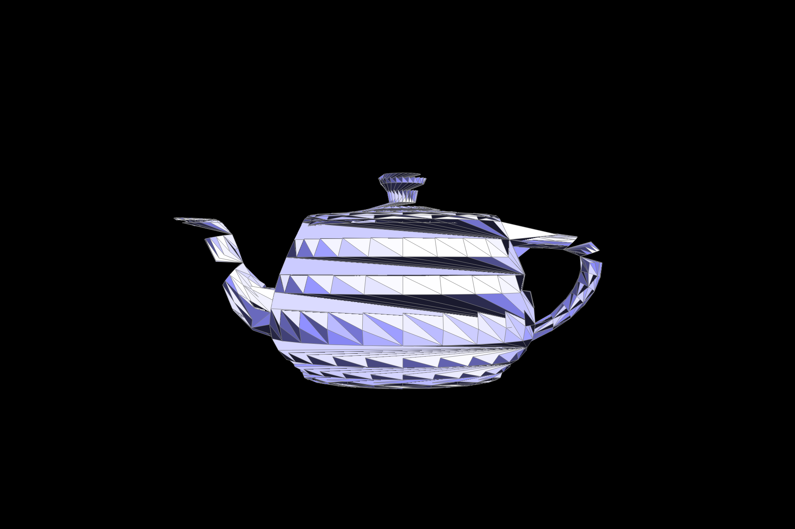 |
Part 5: Edge Split
An edge split inserts a new vertex \( m \) at the midpoint of edge \( (v_0, v_1) \), splitting the two adjacent triangles into four. This creates 1 new vertex, 3 new edges, 2 new faces, and 6 new half-edges. The original edge \( e_0 \) is reused for the \( v_0 \leftrightarrow m \) segment, and a new edge \( e_6 \) connects \( m \leftrightarrow v_1 \). Two cross edges connect \( m \) to the opposite vertices \( v_2 \) and \( v_3 \).
We used the same paper-based approach as the flip, but with more elements to track. The critical detail for Part 6 was marking the isNew flags correctly: the two cross edges (\( m \leftrightarrow v_2 \) and \( m \leftrightarrow v_3 \)) are marked new, while the edge along the original split direction (\( m \leftrightarrow v_1 \)) is not, since it is a continuation of the original edge.
We followed the same diagram-first approach as the edge flip, labeling all elements before and after the split. The main debugging challenge was getting the isNew flags right for Loop subdivision: the cross edges must be marked new while the edge along the original split direction must not, or the flip step in Part 6 produces incorrect connectivity.

|
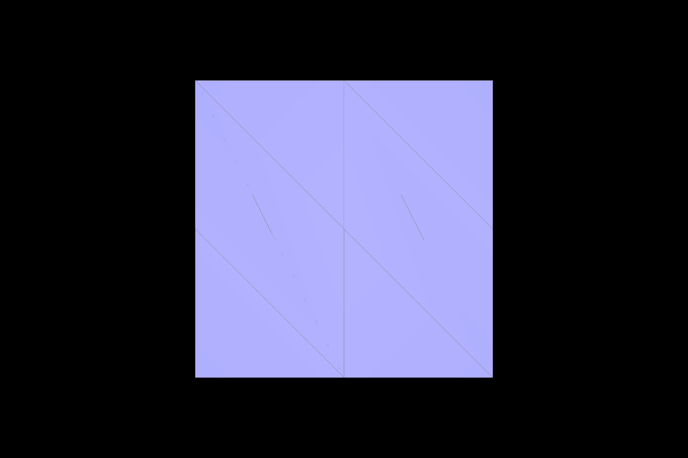 |
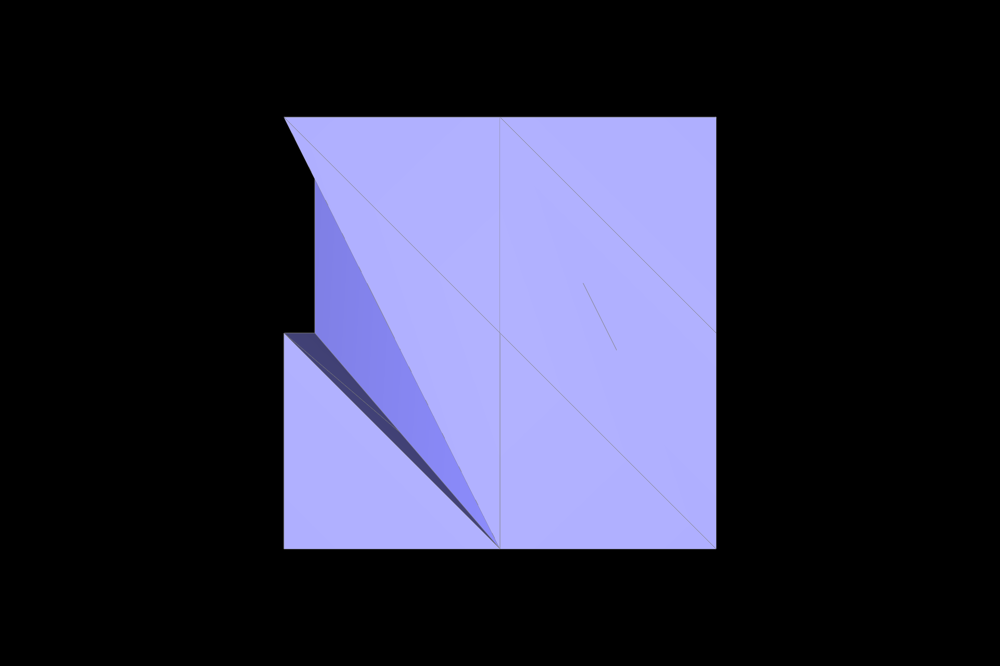
Part 6: Loop Subdivision for Mesh Upsampling
Loop subdivision refines a triangle mesh by splitting every edge and repositioning vertices according to weighted averages. Our implementation follows five steps:
-
Compute updated positions for old vertices. For each existing vertex with degree \( n \), we compute:
\[ \mathbf{v}' = (1 - n \cdot u) \, \mathbf{v} + u \sum_{\text{neighbors}} \mathbf{v}_i \]
where \( u = 3/16 \) if \( n = 3 \), and \( u = 3/(8n) \) otherwise. The result is stored in
newPosition. -
Compute positions for new edge-midpoint vertices. For each edge with endpoints \( A, B \) and opposite vertices \( C, D \):
\[ \mathbf{m} = \frac{3}{8}(A + B) + \frac{1}{8}(C + D) \]
This is stored in the edge's
newPosition. -
Split every original edge. We iterate by count (saving
nEdges()beforehand and grabbing the next iterator before splitting) to avoid visiting newly created edges. Each split creates a new vertex whosenewPositionis copied from the edge. -
Flip new edges connecting one old and one new vertex. Cross edges from the split step are marked
isNew. We flip those that connect an old vertex to a new vertex, which restores the correct Loop subdivision connectivity. -
Copy
newPositionintopositionfor all vertices.
Sharp Corners and Edges
Loop subdivision averages each vertex position with its neighbors, so sharp corners and edges get progressively smoothed out with each iteration. On the cube, the originally sharp 90-degree edges become rounded after just one subdivision pass. Pre-splitting edges near sharp features can reduce this effect: adding extra vertices near a corner increases its degree, which gives the original position more weight in the averaging formula and keeps the corner closer to its original location.
Cube Subdivision and Asymmetry
The default cube.dae has each face split into only 2 triangles by a single diagonal. These diagonals are not symmetric across the cube, so Loop subdivision produces lopsided, asymmetric results.
Pre-processing by splitting each face diagonal (giving each face an X-pattern of 4 triangles) makes the mesh topology symmetric. After that, subdivision rounds produce a symmetric rounded shape, as expected.
|
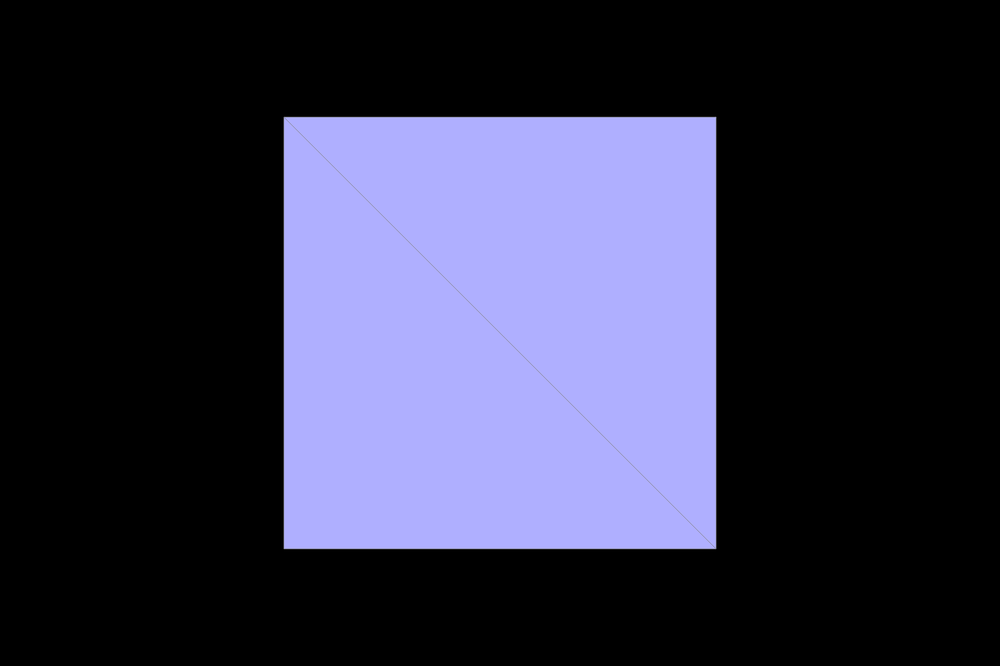 |
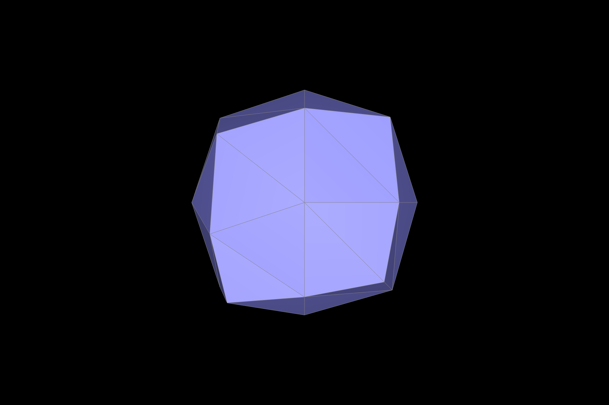 |
|
|
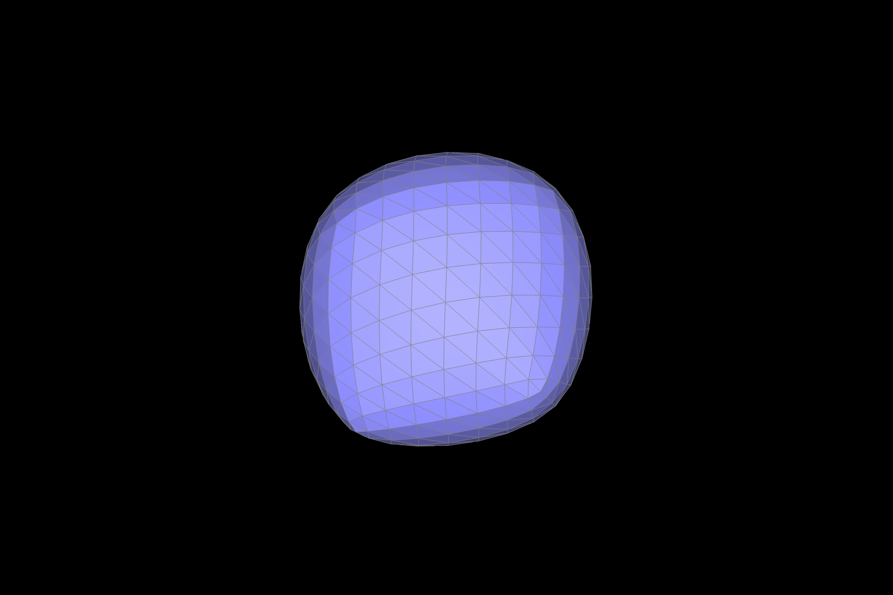 |
|
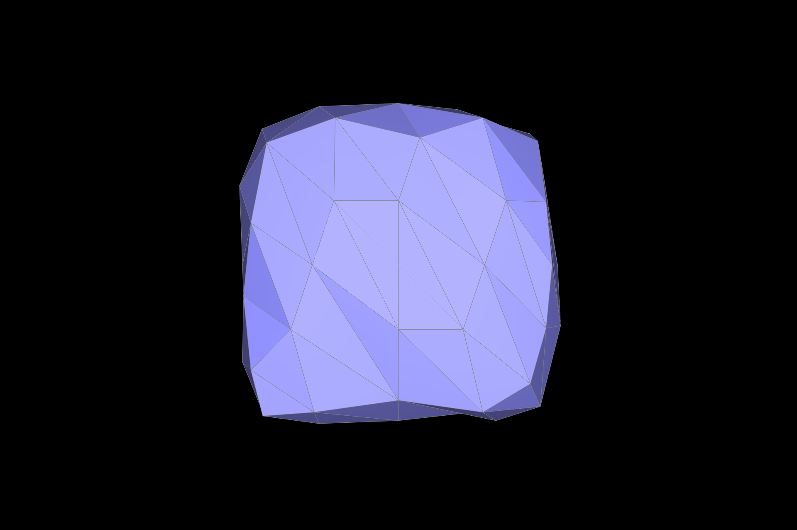 |
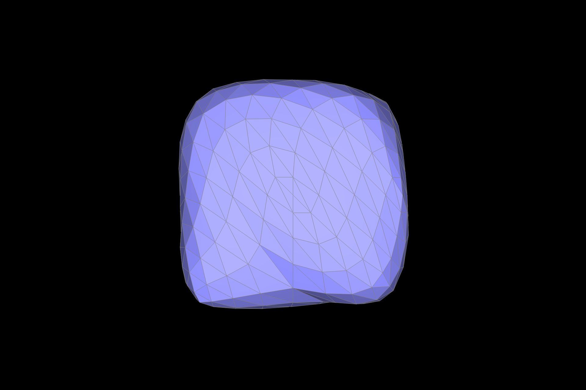 |
Teapot Subdivision
|
|
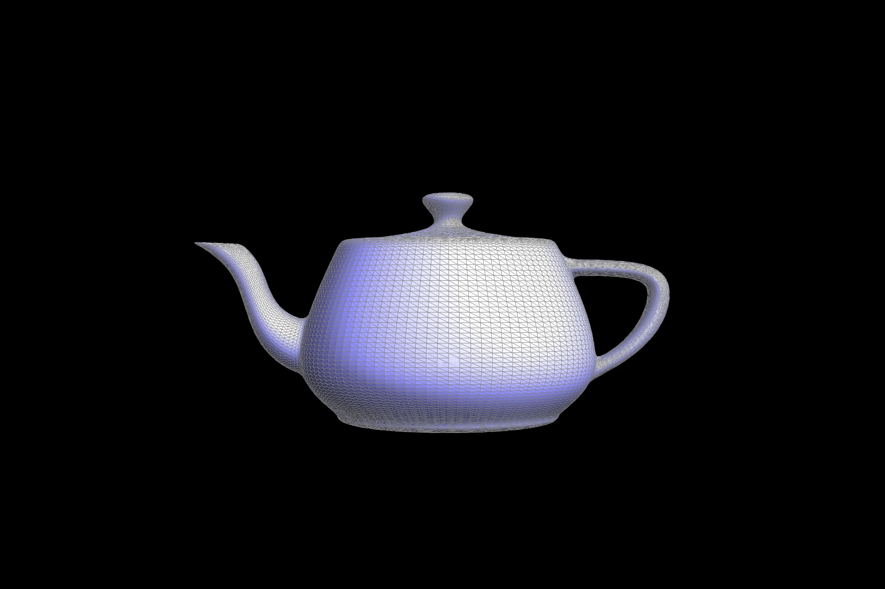 |